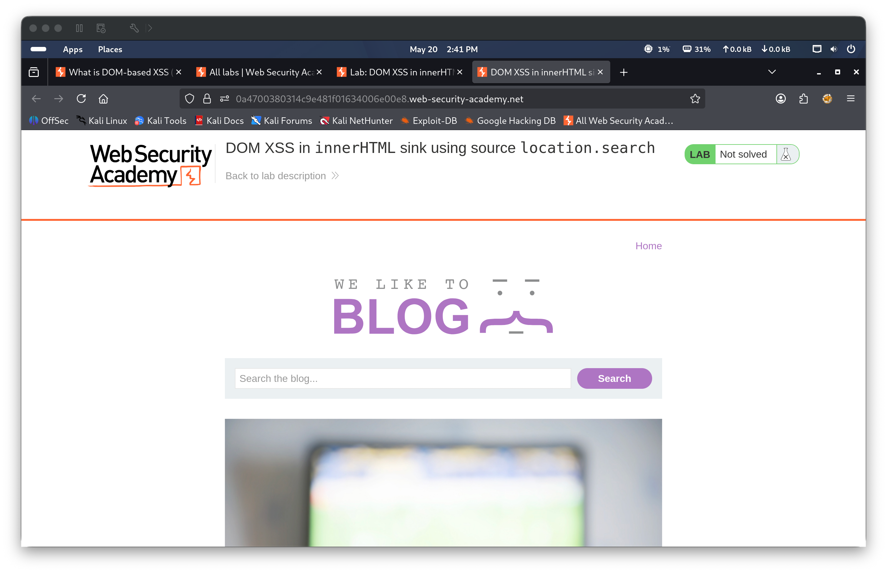
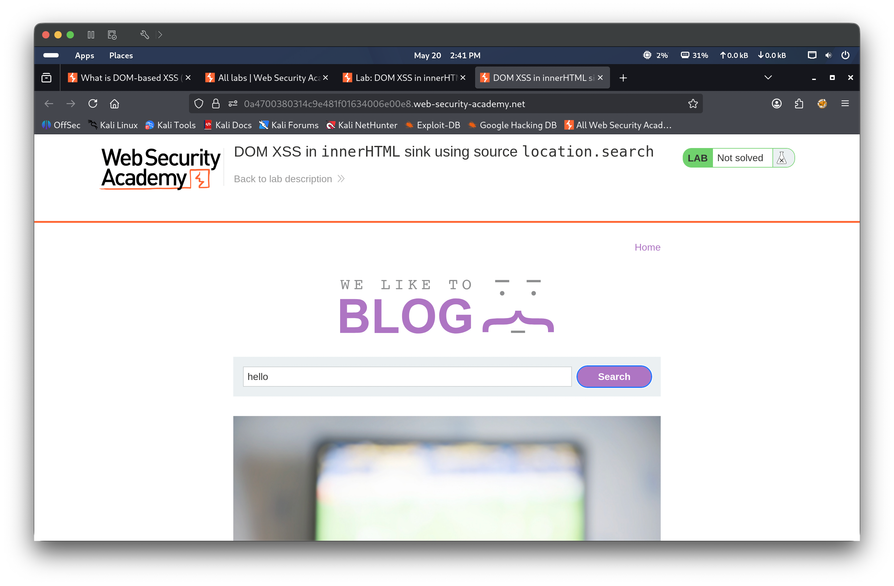
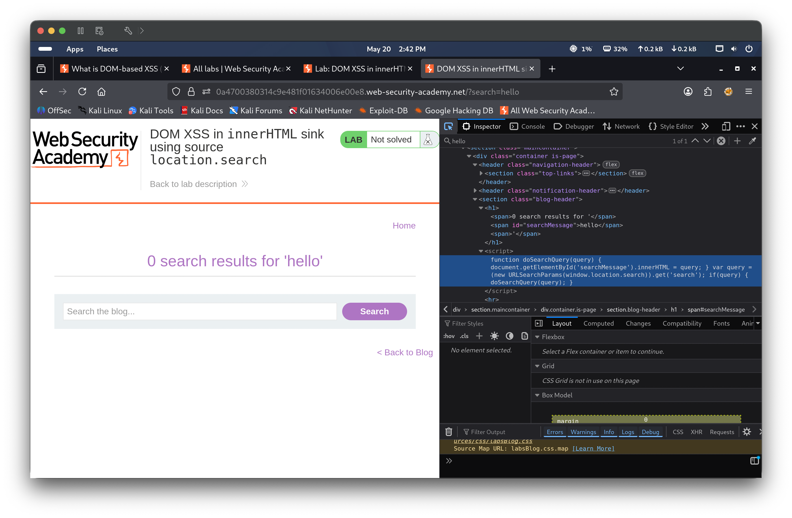
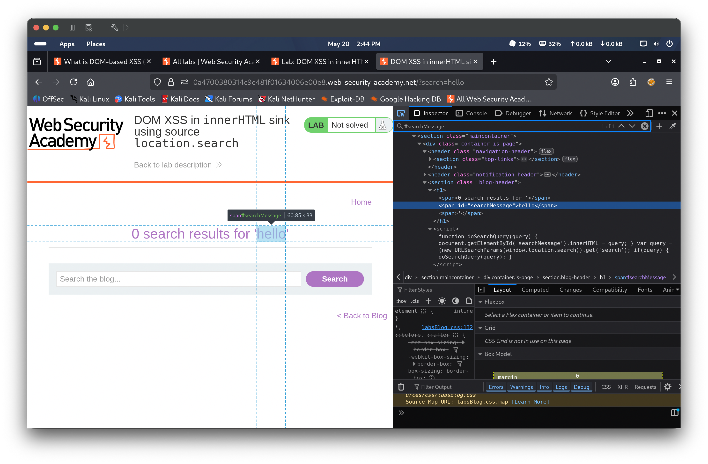
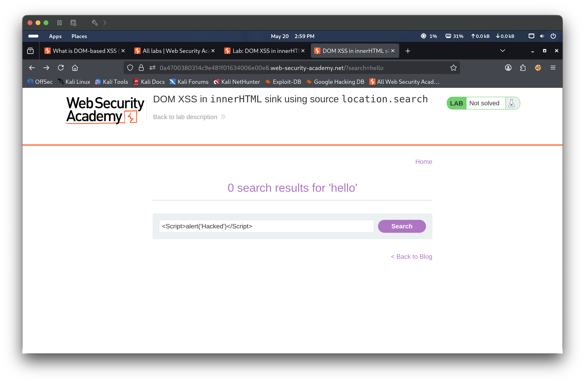
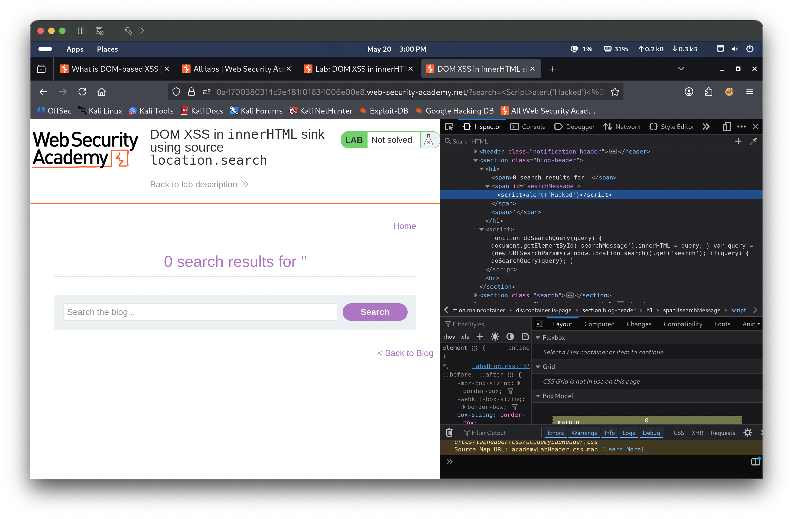
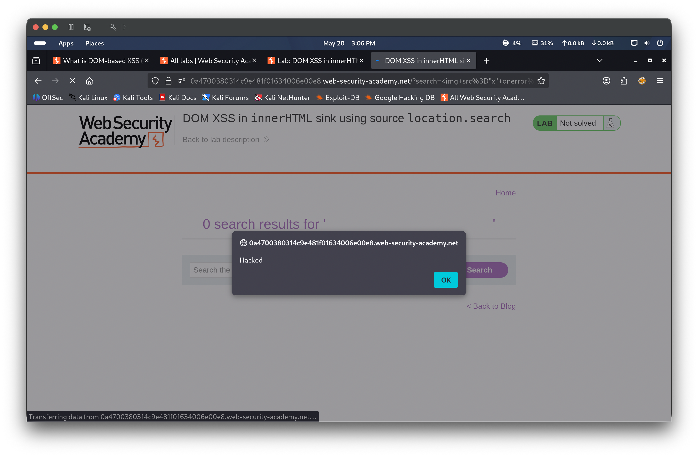
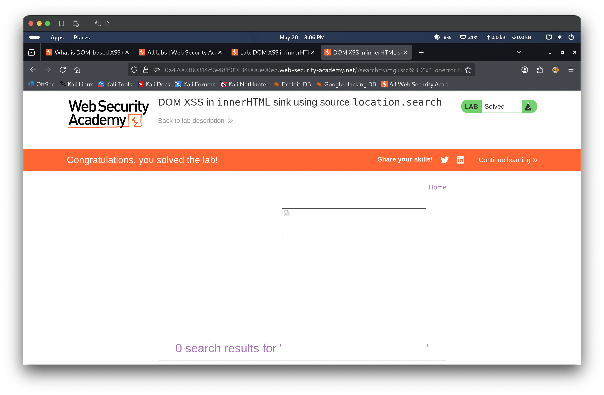

Portfolio / Labs / XSS / Lab 4 — DOM XSS in innerHTML sink using source location.search
Lab 4 — DOM XSS in innerHTML sink using source location.search
🟡 Medium📅 2026-05-20
📋 Finding Summary
Field
Value
Type
Web App
Severity
🟡 Medium
CVE / CWE
CWE-79
Date
2026-05-20
🔍 Description
DOM-based Cross-Site Scripting occurs when client-side JavaScript reads attacker-controllable data from the DOM (the source) and passes it to a dangerous sink without sanitization. In this lab, the blog search functionality uses innerHTML as the sink and location.search as the source. The doSearchQuery() function reads the search query from the URL and assigns it directly to the innerHTML property of a <span> element. Unlike document.write, innerHTML does not execute injected <script> tags — however, it does process HTML event handler attributes on injected elements. An attacker can inject an <img> tag with an onerror event handler to achieve JavaScript execution.
🎯 End Goals
Identify the vulnerable source (location.search) and sink (innerHTML)
Determine that <script> tags do not execute via innerHTML
Craft an alternative payload using an HTML element with an event handler
Confirm JavaScript execution via the alert dialog
Solve the lab
🪜 Steps to Reproduce
Access the lab and perform a test search to observe how input is reflected
Inspect the page source to identify the innerHTML sink and location.search source
Attempt a <script> tag payload and confirm it does not execute via innerHTML
Craft an <img> tag payload with an onerror event handler and submit it
Confirm the alert fires and the lab is marked as solved
🧠 Analysis
Step 1 — Access the lab The lab environment loaded a blog application with a search field. The lab status showed “Not solved”.

Step 2 — Test with a benign search term The term hello was entered into the search box and submitted. The page reflected the input in the results heading, indicating the search query flows from location.search into the page output.

Step 3 — Inspect the page source DevTools was opened after the hello search. The doSearchQuery() function was found assigning location.search directly to element.innerHTML — specifically setting the inner HTML of the #searchMessage span element with the unsanitized query value, confirming both the source and the sink.

Step 4 — Inspect the DOM — innerHTML sink highlighted The Elements panel in DevTools showed the <span id="searchMessage"> element with the search term injected directly into its innerHTML content, visually confirming the vulnerable sink and the exact DOM node where injection occurs.

Step 5 — Attempt with <script> tag (no execution) The payload <Script>alert('Hacked')</Script> was entered in the search field. The tag was injected into the DOM via innerHTML and was visible in the rendered search results, but the script did not execute. This is expected behavior — browsers do not execute <script> elements inserted via innerHTML as a security measure.

Step 6 — Inspect source after script attempt DevTools confirmed the <script>alert('Hacked')</script> tag was present in the DOM inside the #searchMessage span, but had not fired. This validated that a different injection vector was needed — one that uses an event handler rather than a script block.

Step 7 — Craft working payload using <img onerror> The payload <img src="x" onerror="alert('Hacked')"> was entered into the search field. This injects an image element with a deliberately invalid src attribute. When the browser fails to load the image, it fires the onerror event handler — which executes even when the element is inserted via innerHTML.
Step 8 — alert() fires Upon page load, the browser attempted to load the image from src="x", failed, and triggered the onerror handler. An alert dialog appeared with the text “Hacked”, confirming successful DOM XSS exploitation via the innerHTML sink.

Step 9 — Lab solved After dismissing the alert, the page displayed “Congratulations, you solved the lab!” and the lab status updated to Solved.

🎯 Impact
An attacker can craft a malicious URL with the XSS payload in the search query parameter and trick a victim into clicking it. The payload executes entirely client-side without any server interaction. Successful exploitation can lead to session hijacking, credential theft, malicious redirects, or keylogging — all within the context of the trusted domain. The innerHTML sink is particularly notable because <script> tags appear to be blocked, which may give developers a false sense of security while event-handler-based payloads remain fully exploitable.